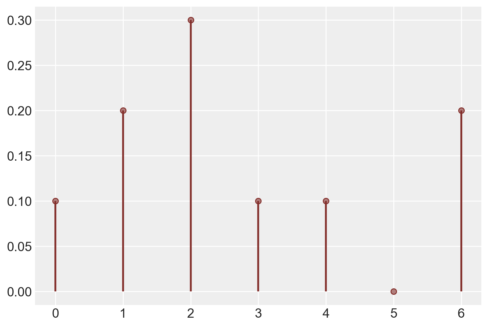

import numpy as np
from scipy import stats as stats
import matplotlib.pyplot as plt
import arviz as az
import seaborn as sns28 Proprietà delle variabili casuali
Prerequisiti
Prima di affrontare il presente capitolo, è essenziale leggere la sezione Appendice K.
Concetti e Competenze Chiave
- Approfondire i concetti di valore atteso e varianza per variabili casuali discrete.
- Acquisire familiarità con le principali proprietà associate al valore atteso e alla varianza.
- Estendere la comprensione di valore atteso e varianza alle variabili casuali continue.
- Utilizzare Python per calcolare effettivamente queste metriche.
- Interpretare criticamente i risultati ottenuti dalle analisi.
Preparazione del Notebook
seed: int = sum(map(ord, "expval_var"))
rng: np.random.Generator = np.random.default_rng(seed=seed)
sns.set_theme(palette="colorblind")
az.style.use("arviz-darkgrid")
%config InlineBackend.figure_format = "retina"Introduzione
Una variabile casuale rappresenta un elemento centrale nella teoria della probabilità e nelle sue applicazioni statistiche. Dal punto di vista formale, una variabile casuale è definita come una funzione che associa elementi di uno spazio campionario \(S\) a valori in un sottoinsieme dei numeri reali \(\mathbb{R}\). Questa definizione consente di quantificare numericamente gli esiti di un fenomeno aleatorio, attribuendo un valore specifico ad ogni possibile risultato.
Le variabili casuali possono essere classificate in due categorie principali: le variabili casuali discrete e quelle continue. Le variabili casuali discrete sono caratterizzate dal fatto di assumere valori in un insieme finito o al più numerabile, mentre le variabili casuali continue si distinguono per la loro capacità di assumere un’infinità di valori all’interno di un intervallo continuo.
Con il concetto di variabile casuale ben definito, emergono questioni relative alla descrizione dell’insieme completo dei possibili esiti e delle probabilità associate a ciascun esito. Queste considerazioni portano alla nozione di “distribuzione” di una variabile casuale. Per le variabili casuali discrete, la distribuzione è una funzione che elenca tutti i possibili valori che la variabile può assumere, insieme alle probabilità corrispondenti a ciascun valore. In questo modo, la distribuzione di una variabile casuale fornisce un quadro completo delle sue caratteristiche probabilistiche, consentendo analisi e inferenze statistiche.
28.1 Valore atteso
Spesso è utile sintetizzare la distribuzione di una variabile casuale tramite indicatori caratteristici. Questi indicatori permettono di cogliere le caratteristiche principali della distribuzione, come la posizione (cioè il baricentro) e la variabilità (cioè la dispersione attorno ad un centro). In questo modo, si può avere una descrizione sintetica della distribuzione di probabilità della variabile casuale. In questo capitolo introdurremo i concetti di valore atteso e di varianza di una variabile casule.
Quando vogliamo conoscere il comportamento tipico di una variabile casuale spesso vogliamo sapere qual è il suo “valore tipico”. La nozione di “valore tipico”, tuttavia, è ambigua. Infatti, essa può essere definita in almeno tre modi diversi:
- la media (somma dei valori divisa per il numero dei valori),
- la mediana (il valore centrale della distribuzione, quando la variabile è ordinata in senso crescente o decrescente),
- la moda (il valore che ricorre più spesso).
Per esempio, la media di \(\{3, 1, 4, 1, 5\}\) è \(\frac{3+1+4+1+5}{5} = 2.8\), la mediana è \(3\) e la moda è \(1\). Tuttavia, la teoria delle probabilità si occupa di variabili casuali piuttosto che di sequenze di numeri. Diventa dunque necessario precisare che cosa intendiamo per “valore tipico” quando facciamo riferimento alle variabili casuali. Giungiamo così alla seguente definizione.
Definizione 28.1 Sia \(Y\) è una variabile casuale discreta che assume i valori \(y_1, \dots, y_n\) con distribuzione \(P(Y = y_i) = p(y_i)\). Per definizione il valore atteso di \(Y\), \(\mathbb{E}(Y)\), è
\[ \mathbb{E}(Y) = \sum_{i=1}^n y_i \cdot p(y_i). \tag{28.1}\]
A parole: il valore atteso (o speranza matematica, o aspettazione, o valor medio) di una variabile casuale è definito come la somma di tutti i valori che la variabile casuale può prendere, ciascuno pesato dalla probabilità con cui il valore è preso.
Esempio 28.1 Calcoliamo il valore atteso della variabile casuale \(Y\) corrispondente al lancio di una moneta equilibrata (testa: Y = 1; croce: Y = 0).
\[ \mathbb{E}(Y) = \sum_{i=1}^{2} y_i \cdot P(y_i) = 0 \cdot \frac{1}{5} + 1 \cdot \frac{1}{5} = 0.5. \]
Esempio 28.2 Calcoliamo il valore atteso della variabile casuale \(X\) corrispondente alla somma dei punti ottenuti dal lancio di due dadi equilibrati a sei facce.
Abbiamo visto nel Capitolo 22 che \(X\) può assumere i valori [2, 3, 4, 5, 6, 7, 8, 9, 10, 11, 12] con distribuzione di massa di probabilità pari a [1/36, 2/36, 3/36, 4/36, 5/36, 6/36, 5/36, 4/36, 3/36, 2/36, 1/36]. Applicando l’Equazione 28.1 otteniamo:
\[ \mathbb{E}(X) = \sum_{i=1}^{11} x_i \cdot P(x_i) = 2 \cdot \frac{1}{36} + 3 \cdot \frac{2}{36} + \dots + 12 \cdot \frac{1}{36} = 7.0. \]
Svolgiamo ora l’esercizio in Python.
Definisco i valori della variabile casuale \(X\) e li trasformiamo in un array NumPy:
x = np.array(list(range(2, 13)))
xarray([ 2, 3, 4, 5, 6, 7, 8, 9, 10, 11, 12])Per trovare la distribuzione di massa della variabile \(X\) ripeto qui il codice che abbiamo usato nel Capitolo 22.
r = range(1, 7)
sample = [(i, j) for i in r for j in r]
px = []
for i in range(2, 13):
event = [roll for roll in sample if sum(roll) == i]
px.append(len(event) / len(sample))
px = np.array(px)
pxarray([0.02777778, 0.05555556, 0.08333333, 0.11111111, 0.13888889,
0.16666667, 0.13888889, 0.11111111, 0.08333333, 0.05555556,
0.02777778])Calcolo ora il valore atteso della \(X\) usando l’eq. {eq}eq-expval-discr:
ex = np.sum(x * px)
ex.round(3)7.0In alternativa, posso usare le funzioni del modulo rv_discrete della libreria stats:
x = np.arange(2, 13)
px = np.array([1/36, 2/36, 3/36, 4/36, 5/36, 6/36, 5/36, 4/36, 3/36, 2/36, 1/36])
X = stats.rv_discrete(values=(x, px))Una volta definito l’oggetto \(X\) con rv_discrete(), il valore atteso viene ritornato dalla funzione expect():
x_ev = X.expect()
round(x_ev, 3)7.028.1.1 Interpretazione
Il valore atteso corrisponde alla media aritmetica di un grande numero di realizzazioni indipendenti della variabile casuale.
Per fare un esempio, ritorniamo all’esempio precedente relativo al lancio di due dadi bilanciati a sei facce nel quale \(X\) rappresenta la “somma dei due dadi”. Per interpretare il valore atteso, simuliamo un grande numero di realizzazioni indipendenti della \(X\) mediante la funzione random.choice() della libreria NumPy. Tale funzione prende come argomenti i valori della variabile casuale, il numero di ripetizioni indipedenti (qui 1,000,000) e la distribuzione di massa di probabilità:
x_samples = np.random.choice(x, size=1000000, p=px)L’istruzione np.random.choice(x, size=1000000, p=px) utilizza la libreria NumPy per generare un array di 1.000.000 di elementi (parametro size), scelti casualmente dall’array x con le probabilità specificate nell’array px. In particolare, x è l’array di cui si vuole effettuare una scelta casuale e px è un array che contiene le probabilità associate ad ogni elemento di x.
Come ci aspettavamo, per un grande numero di realizzazioni indipendenti della \(X\), la media aritmetica approssima il valore atteso:
np.mean(x_samples).round(3)7.00228.1.2 Proprietà del valore atteso
La proprietà più importante del valore atteso è la linearità: il valore atteso di una somma di variabili casuali è uguale alla somma dei lori rispettivi valori attesi:
\[ \mathbb{E}(X + Y) = \mathbb{E}(X) + \mathbb{E}(Y). \tag{28.2}\]
L’Equazione 28.2 sembra ragionevole quando \(X\) e \(Y\) sono indipendenti, ma è anche vera quando \(X\) e \(Y\) sono associati. Abbiamo anche che
\[ \mathbb{E}(cY) = c \mathbb{E}(Y). \tag{28.3}\]
L’Equazione 28.3 ci dice che possiamo estrarre una costante dall’operatore di valore atteso. Tale proprietà si estende a qualunque numero di variabili casuali. Infine, se due variabili casuali \(X\) e \(Y\) sono indipendenti, abbiamo che
\[ \mathbb{E}(X Y) = \mathbb{E}(X) \mathbb{E}(Y). \tag{28.4}\]
La media aritmetica \(\textstyle {\bar {X}}={\frac {X_{1}+\ldots +X_{n}}{n}}\) di \(n\) variabili casuali indipendenti aventi la medesima distribuzione di media \(\mu\) ha valore atteso
\[ \mathbb{E}(\bar{X}) = \frac{1}{n} \mathbb{E}(X_1)+ \dots \mathbb{E}(X_n) = \frac{1}{n} n \mathbb{E}(X) = \mu. \]
Esempio 28.3 Consideriamo il seguente esperimento casuale. Sia \(Y\) il numero che si ottiene dal lancio di un dado equilibrato a sei facce e \(Y\) il numero di teste prodotto dal lancio di una moneta equilibrata (0 oppure 1). Troviamo il valore atteso di \(X+Y\).
Per risolvere il problema iniziamo a costruire lo spazio campione dell’esperimento casuale.
| \(x /\ y\) | 1 | 2 | 3 | 4 | 5 | 6 |
|---|---|---|---|---|---|---|
| 0 | (0, 1) | (0, 2) | (0, 3) | (0, 4) | (0, 5) | (0, 6) |
| 1 | (1, 1) | (1, 2) | (1, 3) | (1, 4) | (1, 5) | (1, 6) |
ovvero
| \(x /\ y\) | 1 | 2 | 3 | 4 | 5 | 6 |
|---|---|---|---|---|---|---|
| 0 | 1 | 2 | 3 | 4 | 5 | 6 |
| 1 | 2 | 3 | 4 | 5 | 6 | 7 |
Il risultato del lancio del dado è indipendente dal risultato del lancio della moneta. Pertanto, ciascun evento elementare dello spazio campione avrà la stessa probabilità di verificarsi, ovvero \(P(\omega) = \frac{1}{12}\). Il valore atteso di \(X+Y\) è dunque uguale a:
\[ \mathbb{E}(X+Y) = 1 \cdot \frac{1}{12} + 2 \cdot \frac{1}{12} + \dots + 7 \cdot \frac{1}{12} = 4.0. \]
Si ottiene lo stesso risultato usando l’Equazione 28.2:
\[ \mathbb{E}(X+Y) = \mathbb{E}(X) + E(Y) = 3.5 + 0.5 = 4.0. \]
Svolgiamo ora l’esercizio in Python.
coin = range(0, 2)
die = range(1, 7)
sample = [(c, d) for c in coin for d in die]
list(sample)[(0, 1),
(0, 2),
(0, 3),
(0, 4),
(0, 5),
(0, 6),
(1, 1),
(1, 2),
(1, 3),
(1, 4),
(1, 5),
(1, 6)]px = []
for i in range(1, 8):
event = [roll for roll in sample if sum(roll) == i]
px.append(len(event) / len(sample))
print(f"P(X + Y = {i}) = {len(event)} / {len(sample)}")P(X + Y = 1) = 1 / 12
P(X + Y = 2) = 2 / 12
P(X + Y = 3) = 2 / 12
P(X + Y = 4) = 2 / 12
P(X + Y = 5) = 2 / 12
P(X + Y = 6) = 2 / 12
P(X + Y = 7) = 1 / 12x = np.arange(1, 8)
sum(x * px)4.0Esempio 28.4 Consideriamo le variabili casuali \(X\) e \(Y\) definite nel caso del lancio di tre monete equilibrate, dove \(X\) conta il numero delle teste nei tre lanci e \(Y\) conta il numero delle teste al primo lancio. Si calcoli il valore atteso di \(Z = X \cdot Y\).
La distribuzione di probabilità congiunta \(P(X, Y)\) è fornita nella tabella seguente.
| \(x /\ y\) | 0 | 1 | \(p(Y)\) |
|---|---|---|---|
| 0 | 1/8 | 0 | 1/8 |
| 1 | 2/8 | 1/8 | 3/8 |
| 2 | 1/8 | 2/8 | 3/8 |
| 3 | 0 | 1/8 | 1/8 |
| \(p(y)\) | 4/8 | 4/8 | 1.0 |
Il calcolo del valore atteso di \(XY\) si riduce a
\[ \mathbb{E}(Z) = 1 \cdot \frac{1}{8} + 2 \cdot \frac{2}{8} + 3 \cdot \frac{1}{8} = 1.0. \]
Si noti che le variabili casuali \(Y\) e \(Y\) non sono indipendenti. Dunque non possiamo usare l’Equazione 28.4. Infatti, il valore atteso di \(X\) è
\[ \mathbb{E}(X) = 1 \cdot \frac{3}{8} + 2 \cdot \frac{3}{8} + 3 \cdot \frac{1}{8} = 1.5 \]
e il valore atteso di \(Y\) è
\[ \mathbb{E}(Y) = 0 \cdot \frac{4}{8} + 1 \cdot \frac{4}{8} = 0.5. \]
Perciò
\[ 1.5 \cdot 0.5 \neq 1.0. \]
Svolgiamo l’esercizio in Python.
r = range(0, 2)
sample = [(i, j, w) for i in r for j in r for w in r]
for i in range(0, 4):
event = [toss for toss in sample if sum(toss) * toss[0] == i]
print(f"P(Z = {i}) : {len(event)} / {len(sample)}")P(Z = 0) : 4 / 8
P(Z = 1) : 1 / 8
P(Z = 2) : 2 / 8
P(Z = 3) : 1 / 8z = np.array([0, 1, 2, 3])
pz = np.array([4/8, 1/8, 2/8, 1/8])
sum(z * pz)1.028.1.3 Variabili casuali continue
Nel caso di una variabile casuale continua \(Y\) il valore atteso diventa:
\[ \mathbb{E}(Y) = \int_{-\infty}^{+\infty} y p(y) \,\operatorname{d}\!y. \tag{28.5}\]
Anche in questo caso il valore atteso è una media ponderata della \(y\), nella quale ciascun possibile valore \(y\) è ponderato per il corrispondente valore della densità \(p(y)\). Possiamo leggere l’integrale pensando che \(y\) rappresenti l’ampiezza delle barre infinitamente strette di un istogramma, con la densità \(p(y)\) che corrisponde all’altezza di tali barre e la notazione \(\int_{-\infty}^{+\infty}\) che corrisponde ad una somma.1
28.1.3.1 Moda
Un’altra misura di tendenza centrale delle variabili casuali continue è la moda. La moda di \(Y\) individua il valore \(y\) più plausibile, ovvero il valore \(y\) che massimizza la funzione di densità \(p(y)\):
\[ Mo(Y) = \text{argmax}_y p(y). \tag{28.6}\]
La notazione \(\text{argmax}_y p(y)\) significa: il valore \(y\) tale per cui la funzione \(p(y)\) assume il suo valore massimo.
28.2 Varianza
La seconda più importante proprietà di una variabile casuale, dopo che conosciamo il suo valore atteso, è la varianza.
Definizione 28.2 Se \(Y\) è una variabile casuale discreta con distribuzione \(p(y)\), per definizione la varianza di \(Y\), \(\mathbb{V}(Y)\), è
\[ \mathbb{V}(Y) = \mathbb{E}\Big[\big(Y - \mathbb{E}(Y)\big)^2\Big]. \tag{28.7}\]
A parole: la varianza è la deviazione media quadratica della variabile dalla sua media.2 Se denotiamo \(\mathbb{E}(Y) = \mu\), la varianza \(\mathbb{V}(Y)\) diventa il valore atteso di \((Y - \mu)^2\).
Esempio 28.5 Posta \(S\) uguale alla somma dei punti ottenuti nel lancio di due dadi equilibrati, si calcoli la varianza di \(S\).
La variabile casuale \(S\) ha la seguente distribuzione di probabilità:
| \(s\) | 2 | 3 | 4 | 5 | 6 | 7 | 8 | 9 | 10 | 11 | 12 |
|---|---|---|---|---|---|---|---|---|---|---|---|
| \(P(S = s)\) | \(\frac{1}{36}\) | \(\frac{2}{36}\) | \(\frac{3}{36}\) | \(\frac{4}{36}\) | \(\frac{5}{36}\) | \(\frac{6}{36}\) | \(\frac{5}{36}\) | \(\frac{4}{36}\) | \(\frac{3}{36}\) | \(\frac{2}{36}\) | \(\frac{1}{36}\) |
Essendo \(\mathbb{E}(S) = 7\), la varianza diventa
\[ \begin{align} \mathbb{V}(S) &= \sum \left(s - \mathbb{E}(S)\right)^2 \cdot P(s) \notag\\ &= (2 - 7)^2 \cdot \frac{1}{36} + (3-7)^2 \cdot \frac{3}{36} + \dots + (12 - 7)^2 \cdot \frac{1}{36} \notag\\ &= 5.8333.\notag \end{align} \]
Svolgiamo l’esercizio in Python.
x = np.arange(2, 13)
px = np.array(
[
1 / 36,
2 / 36,
3 / 36,
4 / 36,
5 / 36,
6 / 36,
5 / 36,
4 / 36,
3 / 36,
2 / 36,
1 / 36,
]
)
X = stats.rv_discrete(values=(x, px))
ex = X.expect()
ex6.999999999999998Applichiamo l’Equazione 28.7:
((x - ex) ** 2 * px).sum()5.833333333333333Usiamo la funzione var() di rv_discrete:
X.var()5.83333333333336428.2.1 Formula alternativa per la varianza
C’è un modo più semplice per calcolare la varianza:
\[ \begin{align} \mathbb{E}\Big[\big(Y - \mathbb{E}(Y)\big)^2\Big] &= \mathbb{E}\big(Y^2 - 2Y\mathbb{E}(Y) + \mathbb{E}(Y)^2\big)\notag\\ &= \mathbb{E}(Y^2) - 2\mathbb{E}(Y)\mathbb{E}(Y) + \mathbb{E}(Y)^2, \end{align} \]
dato che \(\mathbb{E}(Y)\) è una costante. Pertanto
\[ \mathbb{V}(Y) = \mathbb{E}(Y^2) - \big(\mathbb{E}(Y) \big)^2. \tag{28.8}\]
A parole: la varianza è la media dei quadrati meno il quadrato della media della variabile.
Esempio 28.6 Consideriamo la variabile casuale \(Y\) che corrisponde al numero di teste che si osservano nel lancio di una moneta truccata con probabilità di testa uguale a 0.8. Si trovi la varianza di \(Y\).
Il valore atteso di \(Y\) è
\[ \mathbb{E}(Y) = 0 \cdot 0.2 + 1 \cdot 0.8 = 0.8. \]
Usando la formula tradizionale della varianza otteniamo:
\[ \mathbb{V}(Y) = (0 - 0.8)^2 \cdot 0.2 + (1 - 0.8)^2 \cdot 0.8 = 0.16. \]
Lo stesso risultato si trova con la formula alternativa della varianza. Il valore atteso di \(Y^2\) è
\[ \mathbb{E}(Y^2) = 0^2 \cdot 0.2 + 1^2 \cdot 0.8 = 0.8. \]
e la varianza diventa
\[ \mathbb{V}(Y) = \mathbb{E}(Y^2) - \big(\mathbb{E}(Y) \big)^2 = 0.8 - 0.8^2 = 0.16. \]
Svolgiamo l’esercizio in Python:
y = np.array([0, 1])
py = np.array([0.2, 0.8])
sum(y**2 * py) - (sum(y * py)) ** 20.1599999999999999228.2.2 Proprietà
Segno della varianza. La varianza di una variabile aleatoria non è mai negativa, ed è zero solamente quando la variabile assume un solo valore.
Invarianza per traslazione. La varianza è invariante per traslazione, che lascia fisse le distanze dalla media, e cambia quadraticamente per riscalamento:
\[ \mathbb{V}(a + bX) = b^2\mathbb{V}(X). \]
Dimostrazione. Iniziamo a scrivere
\[ (aX+b)-{\mathbb{E}}[aX+b]=aX+b-a{\mathbb{E}}[X]-b=a(X-{\mathbb {E}}[X]). \]
Quindi
\[ \sigma _{{aX+b}}^{2}={\mathbb{E}}[a^{2}(X-{\mathbb {E}}[X])^{2}]=a^{2}\sigma _{X}^{2}. \]
Esaminiamo una dimostrazione numerica.
x = np.array([2, 1, 4, 7])
y = 100 + 2 * x
np.var(y) == 2**2 * np.var(x)TrueVarianza della somma di due variabili indipendenti. La varianza della somma di due variabili indipendenti o anche solo incorrelate è pari alla somma delle loro varianze:
\[ \mathbb{V}(X+Y) = \mathbb{V}(X) + \mathbb{V}(Y). \]
Dimostrazione. Se \(\mathbb{E}(X) = \mathbb{E}(Y) = 0\), allora \(\mathbb{E}(X+Y) = 0\) e
\[\mathbb{V}(X+Y) = \mathbb{E}((X+Y)^2) = \mathbb{E}(X^2) + 2 \mathbb{E}(XY) + \mathbb{E}(Y^2).\]
Siccome le variabili sono indipendenti risulta \(\mathbb{E}(XY) = \mathbb{E}(X)\mathbb{E}(Y) = 0\).
Varianza della differenza di due variabili indipendenti. La varianza della differenza di due variabili indipendenti è pari alla somma delle loro varianze:
\[ \mathbb{V}(X-Y) = \mathbb{V}(X) + \mathbb{V}(Y). \]
Dimostrazione.
\[ \mathbb{V}(X-Y) = \mathbb{V}(X +(-Y)) = \mathbb{V}(X) + \mathbb{V}(-Y) = \mathbb{V}(X) + \mathbb{V}(Y). \]
Varianza della somma di due variabili non indipendenti. Se \(X\) e \(Y\) non sono indipendenti, la formula viene corretta dalla loro covarianza:
\[ \mathbb{V}(X+Y) = \mathbb{V}(X) + \mathbb{V}(Y) + 2 Cov(X,Y), \]
dove \(Cov(X,Y) = \mathbb{E}(XY) - \mathbb{E}(X)\mathbb{E}(Y)\).
Una dimostrazione numerica di questo principio è fornita sotto.
x = np.array([2, 1, 4, 7])
y = np.array([1, 3, 5, 11])
np.var(x + y, ddof=0)35.25np.var(x, ddof=0) + np.var(y, ddof=0) + 2 * np.cov(x, y, ddof=0)[0, 1]35.25Varianza della media di variabili indipendenti. La media aritmetica \(\textstyle {\bar {X}}={\frac {X_{1}+\ldots +X_{n}}{n}}\) di \(n\) variabili casuali indipendenti aventi la medesima distribuzione, ha varianza
\[ \mathbb{V}(\bar{X}) = \frac{1}{n^2} \mathbb{V}(X_1)+ \dots \mathbb{V}(X_n) = \frac{1}{n^2} n \mathbb{V}(X) = \frac{1}{n} \mathbb{V}(X). \]
Il principio precedente è illustrato dalla seguente simulazione.
# Set up the population distribution
population = np.random.normal(loc=50, scale=10, size=10000)
# Set up the sample size and number of samples
sample_size = 30
num_samples = 100000
# Create an array to hold the sample means
sample_means = np.zeros(num_samples)
# Generate the samples and compute their means
for i in range(num_samples):
sample = np.random.choice(population, size=sample_size)
sample_means[i] = np.mean(sample)
# Calculate the variance of the sample means
sampling_dist_mean_var = np.var(sample_means)
sampling_dist_mean_var3.4103710835201433Il valore teorico della varianza della distribuzione campionaria della media è
10**2 / 303.333333333333333528.2.3 Variabili casuali continue
Nel caso di una variabile casuale continua \(Y\), la varianza diventa:
\[ \mathbb{V}(Y) = \int_{-\infty}^{+\infty} \large[y - \mathbb{E}(Y)\large]^2 p(y) \,\operatorname {d}\!y. \tag{28.9}\]
Come nel caso discreto, la varianza di una v.c. continua \(Y\) misura approssimativamente la distanza al quadrato tipica o prevista dei possibili valori \(y\) dalla loro media.
28.3 Deviazione standard
Quando lavoriamo con le varianze, i termini sono innalzati al quadrato e quindi i numeri possono diventare molto grandi (o molto piccoli). Per trasformare nuovamente i valori nell’unità di misura della scala originaria si prende la radice quadrata. Il valore risultante viene chiamato deviazione standard e solitamente è denotato dalla lettera greca \(\sigma\).
Definizione 28.3 Si definisce scarto quadratico medio (o deviazione standard o scarto tipo) la radice quadrata della varianza:
\[ \sigma_Y = \sqrt{\mathbb{V}(Y)}. \tag{28.10}\]
Come nella statistica descrittiva, la deviazione standard di una variabile casuale misura approssimativamente la distanza tipica o prevista dei possibili valori \(y\) dalla loro media.
Per i dadi equilibrati dell’esemio precedebte, la deviazione standard della variabile casuale \(S\) è uguale a \(\sqrt{5.833} = 2.415\).
28.4 Standardizzazione
Definizione 28.4 Data una variabile casuale \(Y\), si dice variabile standardizzata di \(Y\) l’espressione
\[ Z = \frac{Y - \mathbb{E}(Y)}{\sigma_Y}. \tag{28.11}\]
Solitamente, una variabile standardizzata viene denotata con la lettera \(Z\).
28.5 Momenti di variabili casuali
Definizione 28.5 Si chiama momento di ordine \(q\) di una v.c. \(X\), dotata di densità \(p(x)\), la quantità
\[ \mathbb{E}(X^q) = \int_{-\infty}^{+\infty} x^q p(x) \; dx. \tag{28.12}\]
Se \(X\) è una v.c. discreta, i suoi momenti valgono:
\[ \mathbb{E}(X^q) = \sum_i x_i^q P(x_i). \tag{28.13}\]
I momenti sono importanti parametri indicatori di certe proprietà di \(X\). I più noti sono senza dubbio quelli per \(q = 1\) e \(q = 2\). Il momento del primo ordine corrisponde al valore atteso di \(X\). Spesso i momenti di ordine superiore al primo vengono calcolati rispetto al valor medio di \(X\), operando una traslazione \(x_0 = x − \mathbb{E}(X)\) che individua lo scarto dalla media. Ne deriva che il momento centrale di ordine 2 corrisponde alla varianza.
28.6 Alcuni esempi in Python
Utilizzando il modulo stats di scipy, è possibile semplificare i calcoli del valore atteso e della varianza di variabili casuali discrete.
Consideriamo ad esempio una variabile casuale \(X\) che rappresenta i valori ottenuti dal lancio di un dado non equilibrato, con valori possibili da 0 a 6, e con la seguente distribuzione di massa di probabilità: 0.1, 0.2, 0.3, 0.1, 0.1, 0.0, 0.2.
Iniziamo a definire un vettore che contiene i valori della v.c.:
x = np.arange(7)
print(x)[0 1 2 3 4 5 6]Il vettore px conterrà le probabilità associate ai valori x:
px = [0.1, 0.2, 0.3, 0.1, 0.1, 0.0, 0.2]
print(px)[0.1, 0.2, 0.3, 0.1, 0.1, 0.0, 0.2]Controlliamo che la somma sia 1:
np.sum(px)1.0Usiamo ora la funzione rv_discrete() che è una funzione della libreria stats di Python. Tale funzione viene utilizzata per creare una distribuzione discreta personalizzata. La funzione richiede che vengano forniti dei valori discreti (ossia interi) e le rispettive probabilità di occorrenza.
Una volta definita la distribuzione discreta, rv_discrete() permette di eseguire operazioni come la generazione di numeri casuali dalla distribuzione, il calcolo della funzione di probabilità cumulativa (CDF) e della funzione di densità di probabilità (PDF), e la valutazione della media, della varianza e di altre statistiche della distribuzione.
La sintassi di base della funzione rv_discrete() è la seguente:
rv = stats.rv_discrete(name='rv', values=(xk, pk))dove name è il nome della distribuzione discreta, xk sono i valori discreti e pk sono le rispettive probabilità di occorrenza. Ad esempio, creiamo la variabile casuale X:
X = stats.rv_discrete(name='rv', values=(x, px))# Distribuzione di massa di probabilità di X.
print(X.pmf(x))[0.1 0.2 0.3 0.1 0.1 0. 0.2]# Distribuzione comulativa di probabilità di X.
print(X.cdf(x))[0.1 0.3 0.6 0.7 0.8 0.8 1. ]Generiamo un grafico che rappresenta la distribuzione di massa con Matplotlib.
color_fill = "#B17F7D"
color_edge = "#832F2B"
plt.plot(x, X.pmf(x), "o", ms=6, color=color_fill, markeredgecolor=color_edge)
plt.vlines(x, 0, X.pmf(x), lw=2, colors=color_edge)
plt.show()
Calcoliamo il valore atteso di \(X\) implementando la formula del valore atteso, ovvero utilizzando i vettori x e px.
x_ev = (x * px).sum()
x_ev2.7Lo stesso risultato si ottience applicando il metodo .expect() all’oggetto X.
x_ev = X.expect()
x_ev2.7Calcoliamo la varianza di \(X\) usando i vettori x e px.
x_var = ((x - x_ev)**2 * X.pmf(x)).sum()
x_var3.8100000000000005Otteniamo lo stesso risultato applicando il metodo .var() all’oggetto X.
X.var()3.8099999999999987Calcoliamo la deviazione standard di \(X\) prendento la radice quadrata della varianza.
np.sqrt(x_var)1.9519221295943137Oppure, in maniera equivalente, applicando il metodo .std() all’oggetto X.
X.std()1.951922129594313228.7 Commenti e considerazioni finali
L’inferenza bayesiana mira a descrivere la distribuzione a posteriori di variabili casuali che rappresentano i parametri di un modello statistico. Nel capitolo precedente, abbiamo esaminato le caratteristiche principali delle variabili casuali, concentrandoci sul caso discreto. In questo capitolo, abbiamo approfondito le proprietà di una singola variabile casuale. Nel prossimo capitolo, invece, esploreremo il problema di descrivere il verificarsi congiunto di due o più variabili casuali.
28.8 Informazioni sull’Ambiente di Sviluppo
%load_ext watermark
%watermark -n -u -v -iv -w -mLast updated: Fri Aug 02 2024
Python implementation: CPython
Python version : 3.12.4
IPython version : 8.26.0
Compiler : Clang 16.0.6
OS : Darwin
Release : 23.6.0
Machine : arm64
Processor : arm
CPU cores : 8
Architecture: 64bit
seaborn : 0.13.2
arviz : 0.18.0
matplotlib: 3.9.1
scipy : 1.14.0
numpy : 1.26.4
Watermark: 2.4.3
Per il significato della notazione di integrale, si veda l’Appendice K.↩︎
Data una variabile casuale \(Y\) con valore atteso \(\mathbb{E}(Y)\), le “distanze” tra i valori di \(Y\) e il valore atteso \(\mathbb{E}(Y)\) definiscono la variabile casuale \(Y - \mathbb{E}(Y)\) chiamata scarto, oppure deviazione oppure variabile casuale centrata. La variabile \(Y - \mathbb{E}(Y)\) equivale ad una traslazione di sistema di riferimento che porta il valore atteso nell’origine degli assi. Si può dimostrare facilmente che il valore atteso della variabile scarto \(Y - \mathbb{E}(Y)\) vale zero, dunque la media di tale variabile non può essere usata per quantificare la “dispersione” dei valori di \(Y\) relativamente al suo valore medio. Occorre rendere sempre positivi i valori di \(Y - \mathbb{E}(Y)\) e tale risultato viene ottenuto considerando la variabile casuale \(\left(Y - \mathbb{E}(Y)\right)^2\).↩︎